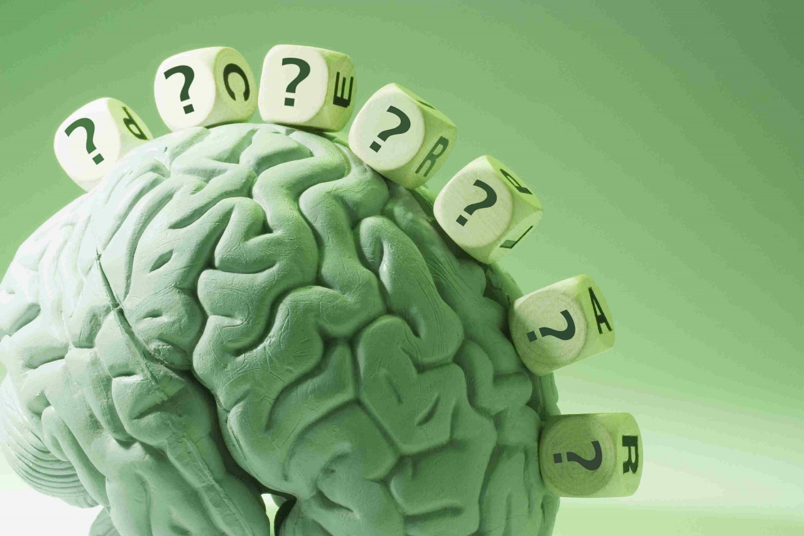
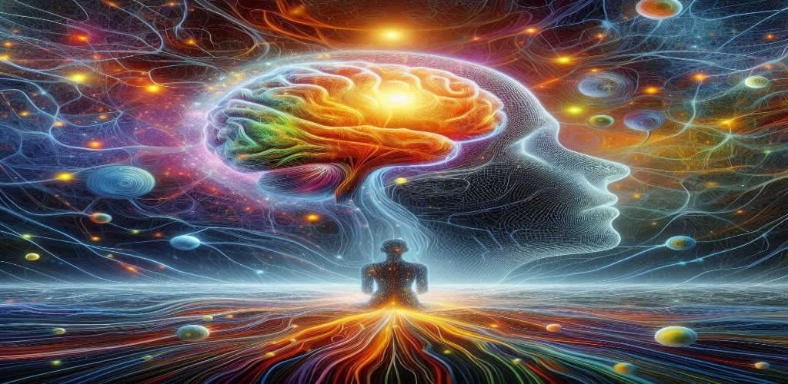
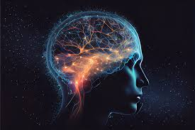
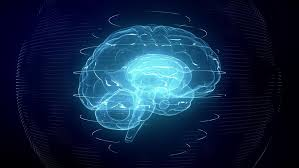
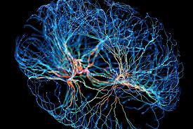
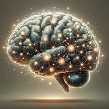
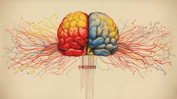
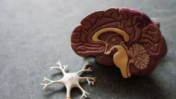
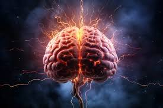

The Human BrainDiscover the complexities of the human brain and its role in behavior, cognition, and health. |
The brain is like a group of experts. All the parts of the brain work together, but each part has its own special responsibilities. The brain can be divided into three basic units: the forebrain, the midbrain, and the hindbrain. The hindbrain includes the upper part of the spinal cord, the brain stem, and a wrinkled ball of tissue called the cerebellum. The hindbrain controls the bodys vital functions such as respiration and heart rate. The cerebellum coordinates movement and is involved in learned movements. When you play the piano or hit a tennis ball, you are activating the cerebellum. The uppermost part of the brainstem is the midbrain, which controls some reflex actions and is part of the circuit involved in the control of eye movements and other voluntary movements. The forebrain is the largest and most highly developed part of the human brain: it consists primarily of the cerebrum and the structures hidden beneath it (see "The Inner Brain"). Image Graphic of Cerebrum and Cerebellum parts of the brain. When people see pictures of the brain it is usually the cerebrum that they notice. The cerebrum sits at the topmost part of the brain and is the source of conscious thoughts and actions. It holds your memories and allows you to plan, imagine, and think. It allows you to recognize friends, read, and play games.
The cerebrum is split into two halves (hemispheres) by a deep fissure. The two cerebral hemispheres communicate with each other through a thick tract of nerve fibers that lies at the base of this fissure, called the corpus callosum. Although the two hemispheres seem to be mirror images of each other, they are different. For instance, the ability to form words seems to lie primarily in the left hemisphere, while the right hemisphere seems to control many abstract reasoning skills.
|  |  |  |
Visual representation of brain anatomy and functions.
The two frontal lobes lie directly behind the forehead. When you plan a schedule, imagine the future, or use reasoned arguments, these two lobes do much of the work. One of the ways the frontal lobes seem to do these things is by acting as short-term storage sites, allowing one idea to be kept in mind while other ideas are considered.
|  |  |  |
Illustration of neuroplasticity in the brain
The brain is one of the hardest working organs in the body. When the brain is healthy it functions quickly and automatically. But when problems occur, the results can be devastating. NINDS supports research on hundreds of neurological disorders. Knowing more about the brain can lead to the development of new treatments for diseases and disorders of the nervous system and improve many areas of human health.
The brain and the rest of the nervous system are composed of many different types of cells, but the primary functional unit is a cell called the neuron. All sensations, movements, thoughts, memories, and feelings are the result of signals that pass through neurons. Neurons consist of three parts: the cell body, dendrites, and the axon.
|  |  |  |
Importance of mental health in our lives.
| Function | Description | Importance |
|---|---|---|
| Congnition | The mental action of acquiring knowledge and understanding | Critical for decision-making and problem-solving |
| Emotion Regulation | The ability to manage and respond to emotional experience | Essential for mental health and social interactions |
| Memory | The process of encoding ,storing and retrieving information | Vital for learning and adapting to new situations |
| Motor Control | The coordination of muscle movements | Necessory for physical activity and coordination |
Brain Conclusion
A summary of brain functions and their importance.